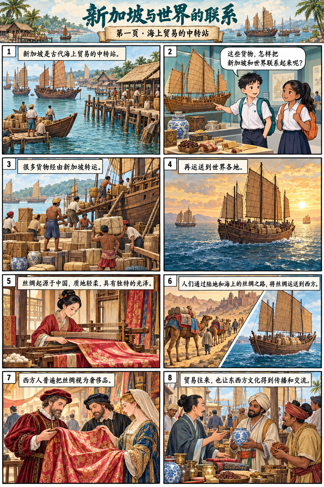
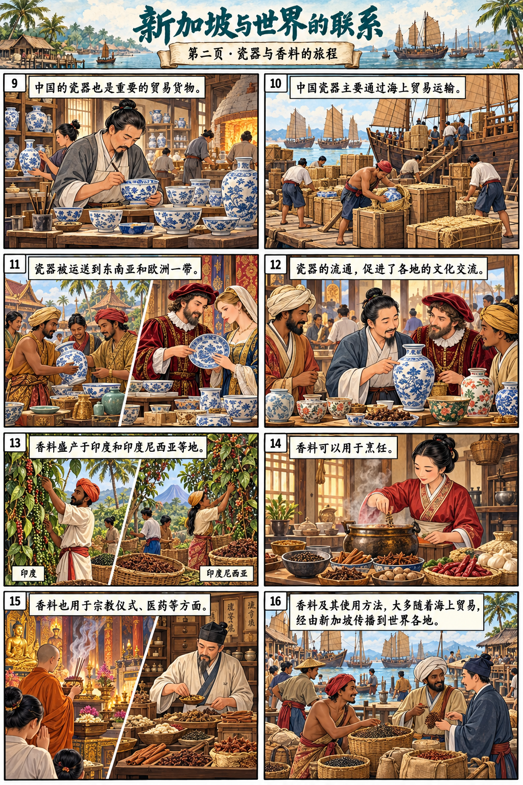
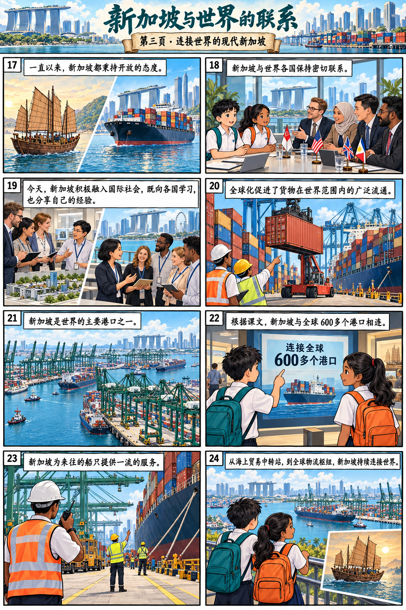
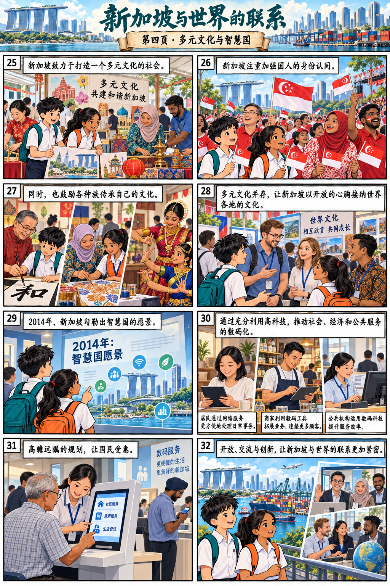

完整漫画回读
以下四页沿用原图。读后可以连起来回顾；作答依据以课文原句为准。




完整课文
第1段 · 古代的中转站
新加坡是古代海上贸易的中转站。很多货物经由新加坡运送到世界各地，东西方文化也在这个过程中得到传播和交流。
第2段 · 海上贸易的中转站 · 丝绸
丝绸起源于中国，质地轻柔，具有独特的光泽。人们通过陆地和海上的丝绸之路，将它运送到西方。西方人普遍把它视为奢侈品。
第3段 · 海上贸易的中转站 · 瓷器
中国的瓷器主要通过海上贸易运输到东南亚和欧洲一带。瓷器的流通促进了各地的文化交流。
第4段 · 海上贸易的中转站 · 香料
香料盛产于印度和印度尼西亚等地。除了用于烹饪，它还可以用于宗教仪式、医药等方面。这些香料及其使用方法，大多数随着海上贸易，经由新加坡传播到世界各地。
第5段 · 开放与交流
一直以来，新加坡都秉持开放的态度，与世界各国保持密切的联系。今天，新加坡更积极地融入国际社会，不仅向世界各国学习，也分享自己的经验。
第6段 · 全球物流枢纽
全球化这一发展趋势促进了货物在世界范围内的广泛流通。新加坡是世界的主要港口之一，她与全球600多个港口相连，为来往的船只提供一流的服务。
第7段 · 多元文化社会
新加坡致力于打造一个多元文化的社会。她不但注重加强国人的身份认同，也鼓励各种族传承自己的文化。多元文化并存这一特质，使新加坡能够以开放的心胸接纳世界各地的文化。
第8段 · 高科技智慧国
2014年，新加坡勾勒出智慧国的愿景，通过充分利用高科技，推动社会、经济和公共服务的数码化。这些高瞻远瞩的规划，不但会让国民受惠，也会加强新加坡与世界的联系。